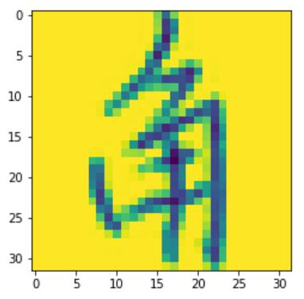
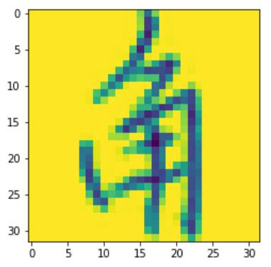

本文旨在为自身后日回忆~~并非用于教学~~
本文强烈建议使用jupyter lab
第一步 得到数据集
不说了
第二步 解析一个文件
就来解析这个叫“1001-c.gnt”的文件吧
官网上有具体的文件格式
简单来说是，一个这样的文件中包含了多个图片
直接上代码好了
import numpy as np
import struct
def load_raw_data(id):
path = '../HWDB1.1trn_gnt/' + str(id) + '-c.gnt'
file = open(path, 'rb')
features = []
labels = []
while file.read(1) != '':
file.seek(-1, 1)
buf = file.read(4)
if len(buf) != 4:
break
length_bytes = struct.unpack('<I', buf)[0]
tag_code = file.read(2)
width = struct.unpack('<H', file.read(2))[0]
height = struct.unpack('<H', file.read(2))[0]
content = file.read(height*width)
img = np.frombuffer(content, dtype=np.uint8).reshape(height,width)
features.append(img)
labels.append(char_dict[tag_code.decode('gb2312')])
return np.array(features), np.array(labels)
char_dict就不放在这里了，太长了
这个函数的第一个返回值是一个ndarray，每个元素是一个灰度图片
第二个返回值是labels数组代表了每个图片分别属的类别
然后随便说一些细节吧
- 每次读完一个图片之后通过
if len(buf) != 4:
break
来判断文件是不是读完了
- 中文编码是gb2312格式的
- 读入文件的时候用np.frombuffer会快一点，尽量不要一个一个像素的读，py的速度太拉胯了
- dtype=np.uint8 可以极限省内存
第三步 看看图片长啥样
import matplotlib.pyplot as plt
features, labels = load_raw_data(1001)
plt.imshow(features[0])
 

同样也可以输出图片的大小
python
print(features[0].shape)
如果你多看几张图片的话就会发现，基本上每张图片的大小都是不一样的，这显然(显然吗？)不能直接用，我们需要先把图片都转换成一样的大小
第四步 图片处理
以将图片最终转换成32*32为例
偷工减料的方法
pyTorch 有个叫做AdaptiveAvgPool2d的东西
导入pytorch的相关东西
python
import torch.nn as nn
import torch
ft = nn.AdaptiveAvgPool2d((32, 32))
为了使用pytorch就必须把原来图片的numpy形式转换成pytorch使用的Tensor形式
还要注意把数据格式改成float格式才能作为参数传到网络里
最后还要注意添加一维作为通道维
反正挺烦的
python
img = torch.from_numpy(features[0])
img = torch.from_numpy(features[0]).float().view(1, features[0].shape[0], features[0].shape[1])
new_img = ft(img)
可以再输出一下img的大小
python
print(img.shape)
可以发现变成了(1, 32, 32)，第一个1是指一个通道，不了解也没关系(
把图片plot出来看看
plt.imshow(new_img[0])
 虽然大小对了，但是图像完全走样了...
虽然大小对了，但是图像完全走样了...
手工缩放图像
没想到好的办法，只能手动缩放了，这里主要使用了PIL的Image模块
python
from PIL import Image
幸运的是，Image可以通过numpy的ndarray直接生成灰度图
python
img = Image.fromarray(features[0])
假设我们想把图片转换成高h宽w（假设图片的原来大小为高x宽y）
不妨假设h=w=0好了~~好萌啊~~
我们就能得到图片的缩放比例
python
h,w = 32,32
x,y = features[0].shape
ratio = min(h/x, w/y)
然后通过PIL来进行图片的缩放
python
x,y = int(ratio*x), int(ratio*y)
img = img.resize((y,x), Image.ANTIALIAS)
resize的第一个参数是指要变换后的大小, 这里有个坑点，排在前面的是width
第二个参数是指插值方法
如果你不知道到底做的对不对可以通过
python
print(img.size) # 查看图片的大小
img.show() # 康康图片长啥样
最后我们要把图片补成高h宽w（为什么还要补原因自己想去
没有太好的方法，我们就采用一种奇技淫巧
先创建一张空图
python
new_img = Image.new('L',(w, h), 255)
'L'代表为灰度图，第二个参数依旧是**width在前面**，255表示每个像素点都是255即白色
然后我们把之前resize的图片粘到这张空图的中间
python
x,y = int((h-x)/2), int((w-y)/2)
new_img.paste(img, (y, x))
paste的第二个参数表示img的左上角处于哪个位置，**width在前**
最后只需要从Image转会ndarray就好了
python
arr = np.asarray(new_img)
plt.imshow(arr)
发现效果好多了
一些补充
在缩放图片的时候可以引入一些随机因素，来提高模型的泛化能力
比如, 让图片不一定被放缩到最大
python
h,w = 32,32
x,y = features[0].shape
ratio = min((h-np.random.randint(3,5))/x, (w-np.random.randint(3,5))/y)